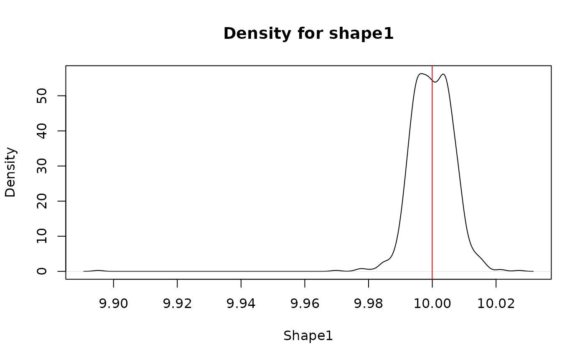
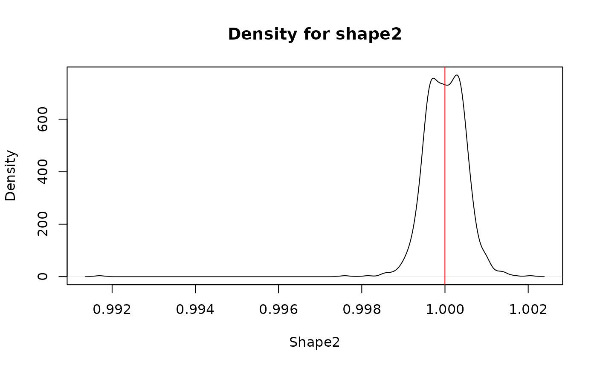
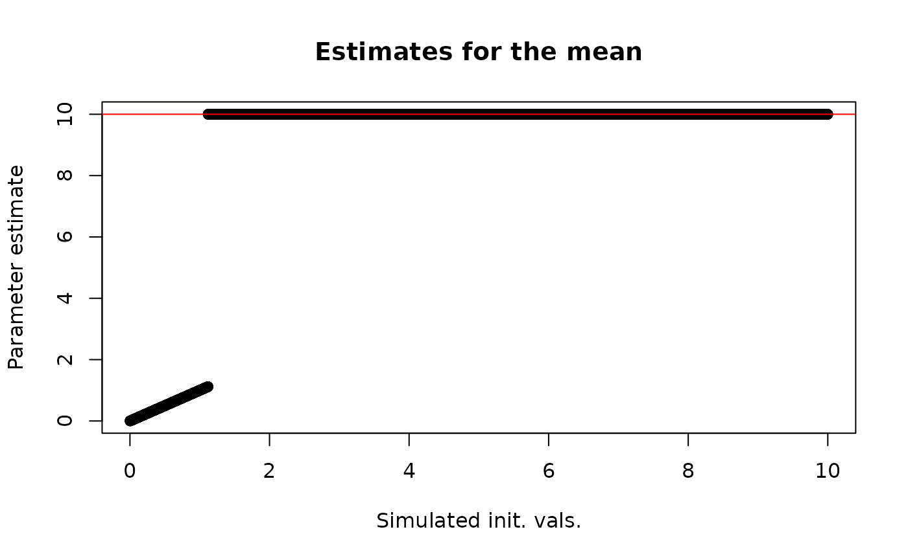
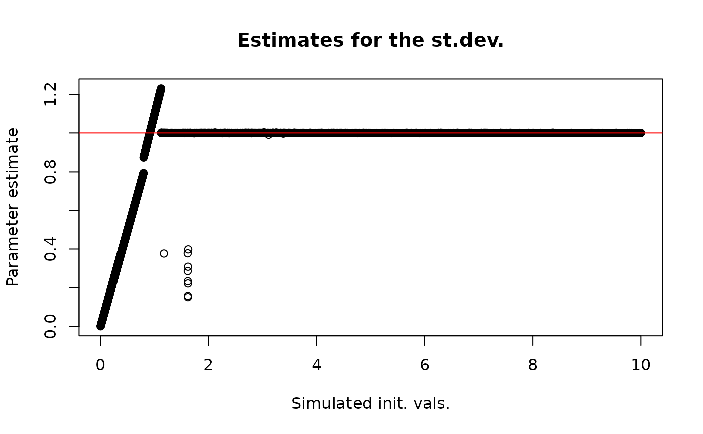
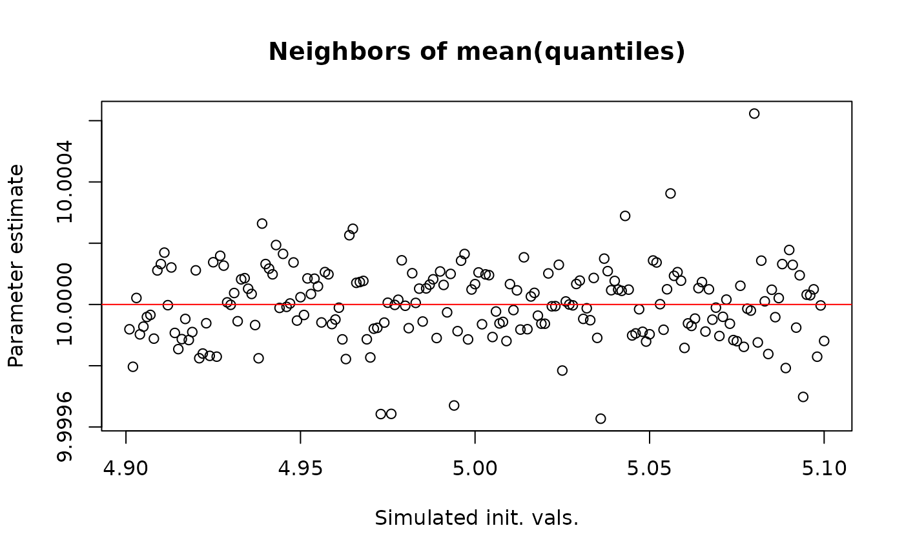
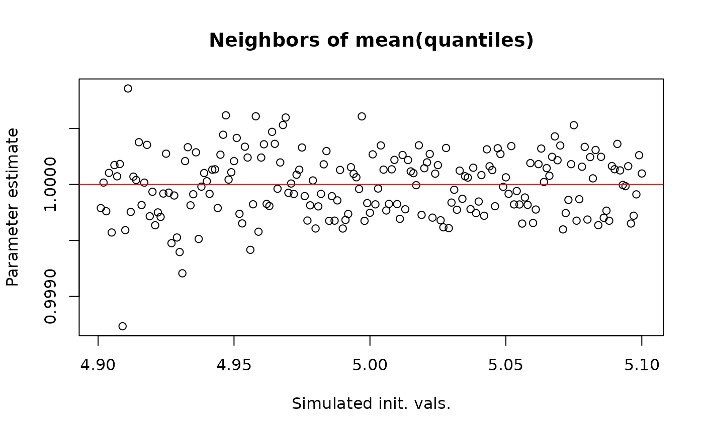
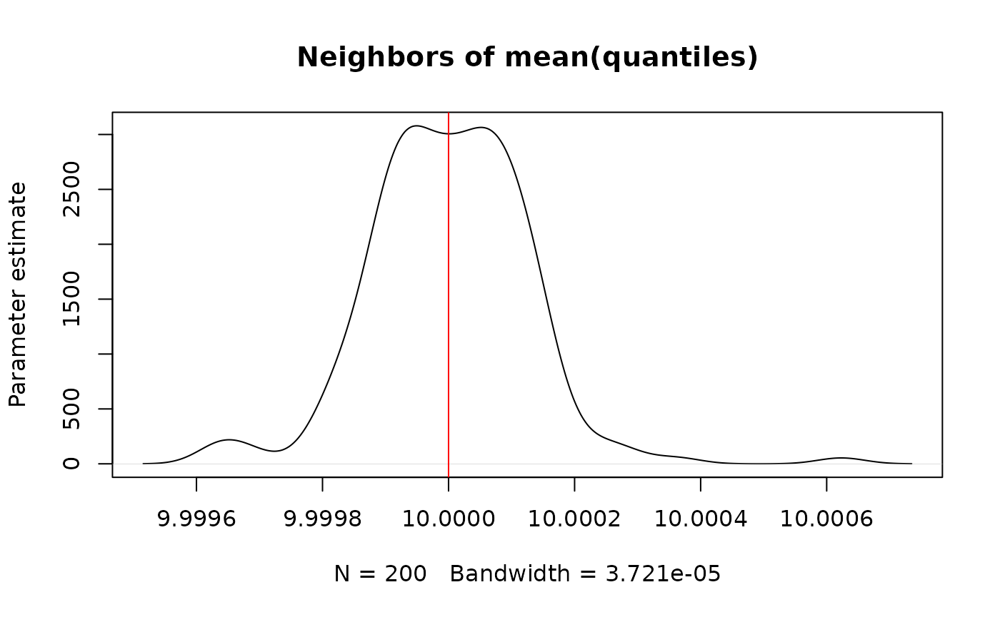
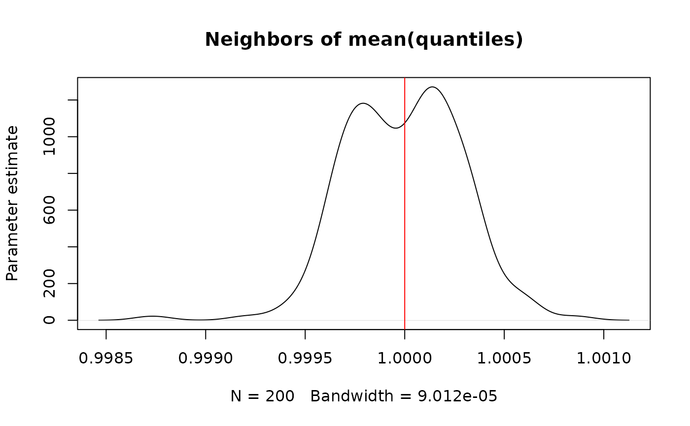

Why to use the mean of the quantiles as initial values in `optim`?
Gustavo A. Ballen
2025-08-19
Source:vignettes/whyInitVals.Rmd
whyInitVals.RmdOne issue with the use of the optim function for
parameter approximation from a ser of percentiles and quantiles is that
it requires initial values for its heuristic search of values. If these
initial values are much distant from the unknown real parameter value,
then the function has serious problems with convergence and may produce
results that are simply wrong. In pre-release versions of
findParams the initial value was a vector of
1s corresponding to the number of parameters to estimate
(e.g., c(1, 1) when estimating mean and
sd in pnorm), but this produced simply wrong
results when, for instance, the real mean was 10 or a
larger value.
With a little help of simulation we can show that the best initial guess is in fact the mean of the quantiles.
the following code will generate a lot of parameter estimates from
several trials using different initial values. With a bit of large
number theory, a decent estimate can be found. Here, q and
p are quantiles and percentiles under a given, known
distribution; a different anonymous function where sapply varies the
values of the initial values allows to get the $par element
of the optim call, and the the density plot shows that
overall a mean estimate approaches at the correct value. The values of
q come from qDIST given the probabilities of interest
(generally 0.025, 0.5, and 0.975). For instance: qbeta(p = c(0.05, 0.5,
0.95), shape1 = 10, shape2 = 1) for the example below:
# X = seq... is the set of values to try, from min(q) to max(q).
parameters <- sapply(X = seq(0.6915029, 0.9974714, length.out = 1000),
FUN = function(x) {
findParamsPrototype(q = c(0.6915029, 0.9330330, 0.9974714),
p = c(0.025, 0.5, 0.975),
densit = "pbeta",
params = c("shape1", "shape2"),
initVals = c(x, x))$par
},
simplify = TRUE)
plot(density(t(parameters)[, 1]), main = "Density for shape1", xlab = "Shape1", ylab = "Density")
abline(v = mean(parameters[1, ]), col = "red")
plot(density(t(parameters)[, 2]), main = "Density for shape2", xlab = "Shape2", ylab = "Density")
abline(v = mean(parameters[2, ]), col = "red")
Large number theory allow us to expect such result, but, what if the specific initial value matters? Another simulation plotting the parameter value as a function of the initial value can be prepared with, say, a random variable . Such a large mean is expected to cause problems with initial values, since in these simulations 10 is huge when compared to 1. Initial values were simulated to take values between 0.001 and 10 because so zero and negative values would break the code.
## [1] 8.040036 10.000000 11.959964
# simulate the parameters
simInitVals <- seq(0.001, 10, length.out = 10000)
parameters2 <- sapply(X = simInitVals,
FUN = function(x) {
findParamsPrototype(q = c(8.040036, 10.000000, 11.959964),
p = c(0.025, 0.5, 0.975),
densit = "pnorm",
params = c("mean", "sd"),
initVals = c(x, x))$par
},
simplify = TRUE)
# plot the results
plot(y = parameters2[1,], x = simInitVals, main = "Estimates for the mean", xlab = "Simulated init. vals.", ylab = "Parameter estimate")
abline(h = 10, col = "red")
plot(y = parameters2[2,], x = simInitVals, main = "Estimates for the st.dev.", xlab = "Simulated init. vals.", ylab = "Parameter estimate")
abline(h = 1, col = "red")
Here we see a very interesting result: The initial values near zero up to a bit above 1 cause very odd and unreliable estimates of each parameter, while larger values, closer to the real parameter values invariantly provide reliable estimates. Please note that the red line is the true parameter value that we started with above. But, what happens in the neighborhood of the mean of the quantiles?
meanNeighbors <- which(simInitVals > (mean(simInitVals) - 0.1) & simInitVals < (mean(simInitVals) + 0.1))
plot(y = parameters2[1,][meanNeighbors], x = simInitVals[meanNeighbors], main = "Neighbors of mean(quantiles)", xlab = "Simulated init. vals.", ylab = "Parameter estimate")
abline(h = 10, col = "red")
plot(y = parameters2[2,][meanNeighbors], x = simInitVals[meanNeighbors], main = "Neighbors of mean(quantiles)", xlab = "Simulated init. vals.", ylab = "Parameter estimate")
abline(h = 1, col = "red")
Now let’s visualize it as densities:
plot(density(parameters2[1,][meanNeighbors]), main = "Neighbors of mean(quantiles)", ylab = "Parameter estimate")
abline(v = 10, col = "red")
plot(density(parameters2[2,][meanNeighbors]), main = "Neighbors of mean(quantiles)", ylab = "Parameter estimate")
abline(v = 1, col = "red")
Here we see that the values around the mean of the quantiles as
initial values behave with the regular properties of large-number theory
(real parameter number in red line as above). Therefore, it is advisable
to pick this as a regular initial value in the context of the
optmi function.
Why did the first example behave nicely? Results not shown (just
change the values in seq(from = 0, to = 1)) indicate that
convergence is not a concern when estimating the parameters in the beta
distribution and there is a reason for it. The beta PDF is defined over
,
so it makes no sense at all to try values outside this interval:
where is the beta function
Being 0 and 1 not that far away from each other, we find they behaving as our simulation of the neighborhood of the mean of quantiles in the esitmation of the normal PDF parameters.